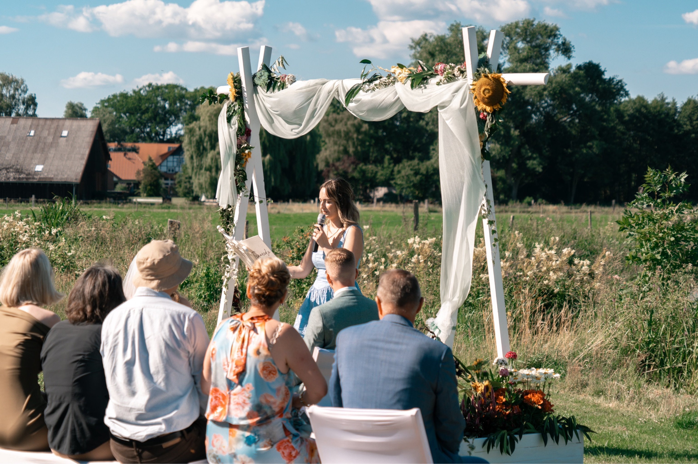

Freie Trauerrednerin mit Herz
Worte, die trösten und in Erinnerung bleiben
In den Stunden des Abschieds finde ich einfühlsame Worte für ein Leben, das euch etwas bedeutet hat. Persönlich, ehrlich und voller Wärme - eine Trauerrede, die dem Menschen gerecht wird, den ihr verabschiedet.
Jetzt Kontakt aufnehmen
Ein Abschied mit Würde und Wärme
Der Verlust eines geliebten Menschen stellt das Leben auf den Kopf. In dieser Zeit möchte ich euch zur Seite stehen und mit einfühlsamen, persönlichen Worten das Leben eures Angehörigen würdigen - fernab von austauschbaren Floskeln.
In einem ruhigen, vertrauensvollen Gespräch mit euch als Familie oder Freunden erfahre ich, wer dieser Mensch war - seine Geschichten, seine Eigenheiten, das, was ihn ausgemacht hat. Daraus entsteht eine Rede, die dem Leben gerecht wird und euch durch die Trauerfeier trägt.
Warum eine freie Trauerrede
Unabhängig, persönlich und ganz auf den Menschen zugeschnitten, den ihr verabschiedet.
Kurzfristig möglich
Ich weiß, wie wenig Zeit oft bleibt, und richte mich nach eurem Zeitrahmen.
Ganz persönlich
Jede Rede entsteht individuell aus euren Erinnerungen - keine Floskeln, kein Schema.
Unabhängig von Konfession
Frei von religiösen Vorgaben - ganz danach ausgerichtet, was dem Verstorbenen entsprach.
Einfühlsame Begleitung
Ich begleite euch und eure Gäste ruhig und würdevoll durch die gesamte Feier.
Der Ablauf
In dieser besonderen Zeit begleite ich euch Schritt für Schritt - ruhig und mit Zeit, die ihr braucht.
1. Erster Kontakt
Ihr meldet euch bei mir - auch kurzfristig. Ich nehme mir Zeit für ein erstes, ruhiges Gespräch.
2. Das Gespräch
Gemeinsam erinnern wir uns an den verstorbenen Menschen - seine Geschichte, seine Werte, seine besonderen Momente.
3. Die Rede entsteht
Mit viel Sorgfalt schreibe ich eine persönliche Rede, die das Leben würdigt und Trost spendet.
4. Die Trauerfeier
Ich begleite euch und eure Gäste einfühlsam durch die Feier - mit Ruhe, Wärme und Respekt.
Häufig gestellte Fragen
Antworten auf die wichtigsten Fragen rund um die Trauerrede.
Bei Trauerfeiern bin ich auch kurzfristig für euch da - meldet euch einfach, wir finden gemeinsam eine Lösung, auch wenn die Zeit knapp ist.
Nein. Eine freie Trauerrede ist unabhängig von Konfession und Glauben - sie richtet sich ganz nach dem Leben und den Wünschen des Verstorbenen und seiner Familie.
In einem ruhigen, einfühlsamen Gespräch - persönlich oder per Telefon/Video - erzählt ihr mir von eurem geliebten Menschen. Ich höre zu und stelle behutsam Fragen, damit eine Rede entsteht, die wirklich passt.
Meldet euch so schnell wie möglich - ich versuche, auch bei kurzfristigen Anfragen für euch da zu sein und richte mich nach eurem Zeitrahmen.
In Kontakt treten
Schreibt mir über das Kontaktformular - ich melde mich so schnell wie möglich bei euch zurück.
Zum Kontaktformular